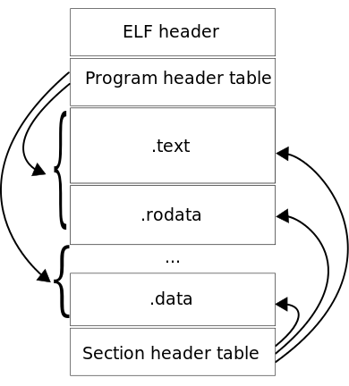
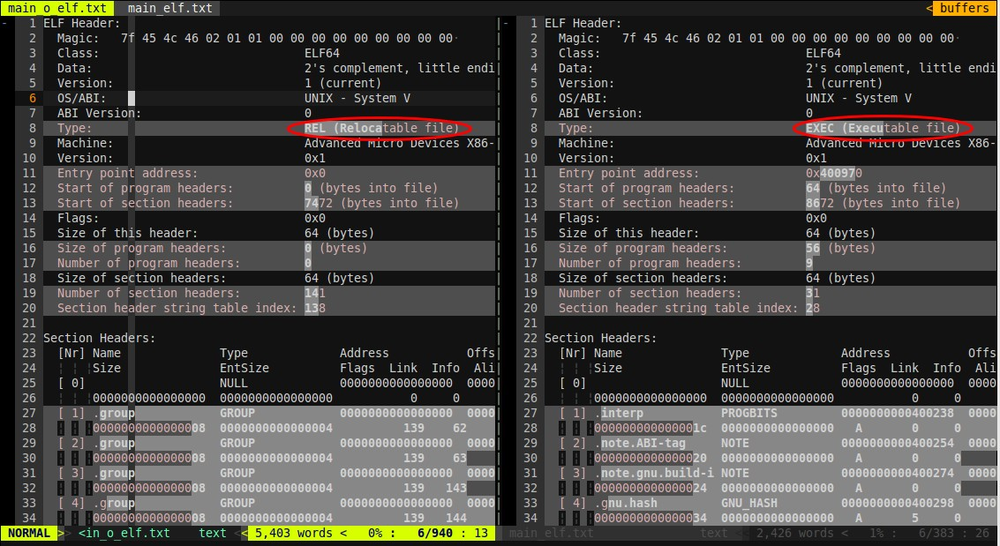
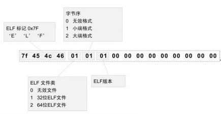
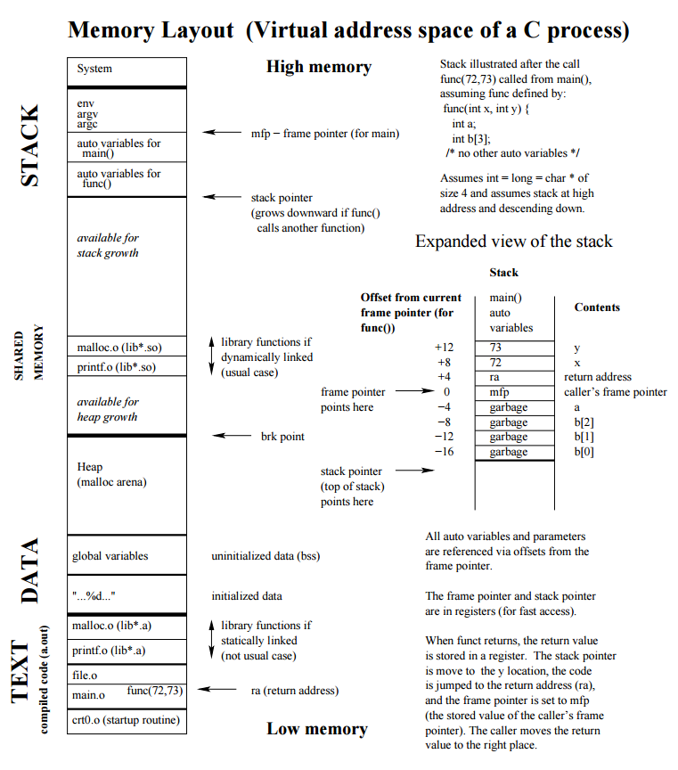
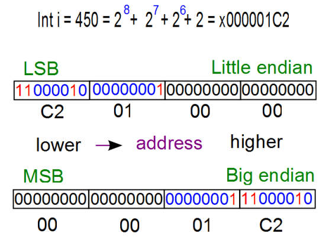

本文所使用的环境：
- Ubuntu-14.04 x64 kernel 4.2.0-36-generic
- GCC version 4.8.4
需要用到的工具（都是系统自带的，以下是man的基本信息，详细信息可以直接查看man手册）：
- size - list section sizes and total size.可以列出section大小和总的大小，能够用于粗略估计，但不适合深度研究section大小
- readelf - Displays information about ELF files.显示ELF文件的信息，readelf非常强大，能够显示出ELF非常多的信息
- objdump - display information from object files. 显示object文件的信息，也就是目标文件，功能与readelf类似，但没有readelf强大，有些readelf可以显示的信息，它无法显示
如果对编译过程不甚了解，可以参看这里实例验证C/C++源代码如何变成程序的过程
关于ELF
关于内存布局，首先需要了解ELF（Executable and Linkable Format）文件，因为ELF文件格式即是可执行文件通用格式，几乎所有UNIX系统的可执行文件都是采用ELF格式，ELF将被加载器（loader）载入到内存中被操作系统执行，所以ELF中指定了可执行程序的内存布局，ELF格式有三种不同的类型：
- 可重定位的目标文件（relocatable或object file），也就是编译之后用于链接的文件
- 可执行文件（Executable），链接之后可以直接运行的文件
- 共享库（Shared Object，或Shared Library）
具体一个ELF文件是哪种类型由ELF文件中的ELF Header、Section Header Table和Program Header Table指定。详情可以参考清华大学的一个课件ELF文件和Wikipedia上的Executable and Linkable Format
或者参见·elf-man，当然自己man elf也是一样的。
下面两个图ELF文件的布局：
 
sections和segments的区别
从上图中可以清楚的看到与可链接的(linkable)对应的是sections，与可执行的（executable）对应的是segments。ELF格式文件提供了两个视角，如后面的图中所示，左边是从链接器的视角来看ELF文件，右边是从加载器的视角来看ELF文件（左右是相对的，在前面图中则是相反中），链接器把ELF文件看成是Section的集合，sections中包含了链接和重定位的所有重要信息，可重定位的ELF中任意一个字节都最多对应一个section，也可以有一些不属于任何一个section的孤立字节。而加载器（loader）则把ELF文件看成是Segment的集合，segments中包含了可执行文件或共享库需要被加载到内存中的必要信息，每个segment中可以由一个或多个section组成，每个segment都有一个长度和一组与之关联的权限（如read、write、execute），一个进程只有在权限允许且在segment中的偏移长度在segment指定的长度之内，才能正常引用segment，否则将会出现segmentation fault的异常，关于segments的解释可以参看Wikipedia的Memory segmentation。
简单分析一下ELF文件各部分的信息，引用自上面提到的清华的一个课件。
开头的ELF Header描述了体系结构和操作系统等基本信息，并指出Section Header Table和Program Header Table在文件中的什么位置，Program Header Table在链接过程中用不到，所以是可有可无的，Section Header Table中保存了所有Section的描述信息，通过Section Header Table可以找到每个Section在文件中的位置。右边是从加载器的视角来看ELF文件，开头是ELF Header，Program Header Table中保存了所有Segment的描述信息，Section Header Table在加载过程中用不到，所以是可有可无的。从上图可以看出，一个Segment由一个或多个Section组成，这些Section加载到内存时具有相同的访问权限。有些Section只对链接器有意义，在运行时用不到，也不需要加载到内存，那么就不属于任何Segment。注意Section Header Table和Program Header Table并不是一定要位于文件的开头和结尾，其位置由ELF Header指出，上图这么画只是为了清晰
目标文件需要链接器做进一步处理，所以一定有Section Header Table；可执行文件需要加载运行，所以一定有Program Header Table；而共享库既要加载运行，又要在加载时做动态链接，所以既有Section Header Table又有Program Header Table。
这样就区别出了ELF文件的三种类型。
链接器是如何将可重定位的目标程序中的sections映射到可执行目标程序中的segments，详情可以参见Airs上的Linkers，总结来说：
链接器从输入的可重定位的目标程序中读取section，然后根据访问权限将所有可载入的section对应地写入到可执行文件中的segments中。也就是说segments可以直接与内存相映射（终于扯出了内存布局），而setcion则是根据访问权限与segment映射，通常情况下所有的只读setcions被映射到一个segment中，而所有的可写sections被映射到其他segment。
查看ELF文件信息
下图是使用readelf工具读出的实例验证C/C++源代码如何变成程序的过程中main.cpp生成的可重定位的目标程序和可执行的目标程序的一部分输出，readelf命令是readelf -a main.o

使用vimdiff进行的比对，从图的ELF Header中可以清楚地看到前面一个ELF类型是可重定位的文件（REL），而后面一个是可执行的文件（EXEC）。通过ELF的魔数（Magic）可以看出这个ELF是64位，字节序为小端格式（后面将进行验证），更多关于ELF魔数可以参见Wikipedia，或下图：

通过上图中的Section Headers部分信息可以看出链接之前的可重定位的目标文件中的section地址段全是0，因为这些加载地址要在链接时才会添加，所以可执行的文件中该地址都存在（当然这个地址是虚拟地址，需要根据程序运行时的实际地址进行偏移）。
通过命令readelf --segments <input>命令可以查看Section到Segment的映射，由于可重定位的目标文件中并不存在segments，上面也说了可执行的目标文件有program header进行标识，所以该命令作用于main.o（可重定位的目标文件）时会提示”There are no program headers in this file.”。对于main（可执行的目标程序）输出如下，最下面标出了Section到Segment的映射。
1 | Elf file type is EXEC (Executable file) |
当然可以使用readelf --sections <input>命令读取所有的sections。
Segments分析
上面已经说了ELF中的Segments对应的就是内存的布局，所以这里要先来分析Segments。
Segments主要包含以下几个部分
.text segment
它是固定大小的只读segment
text segment也称代码段（segment），它包含了编译器和汇编器提供的可执行指令。
.data segment
它是固定大小的可读写segment
data segment也称为已初始化（initialized）的数据段（segment），它包含已初始化的：
- 全局变量，包括全局静态变量
- 局部静态变量（即static声明的变量）
该segment的大小由源代码中相应变量所占用的大小决定，这些变量的值可以在运行时改变。
.rdata/.rodata segment
它是一段只读的segment
该segment存储静态的无名数据以及const修饰的常量，例如字符串常量，const修饰的变量。
.bss segment
它是可读写的segment，与.data segment相邻
BSS segment也称为未初始化的数据段，包含全局或静态未初始化的变量，该部分数据中的值会在程序启动时直接初始为0，BSS是Block Started by Symbol的简写。
堆（head）和栈（stack）
堆和栈是每个程序都有的内存区域，详情可以参见Data segment
堆
维基百科上的解释，堆起始于.bss和.data segments之后，从该处朝着地址空间变大的方向增长。堆通过malloc、realloc、free来管理，具体这三个函数的实现，在linux下有可能是使用brk/sbrk来实现，当然也有可能是通过mmap从虚拟内存的非连续内存中获取后给进程的虚拟地址空间的（brk/sbrk/mmap都是linux下管理内存的函数）。堆被同一个进程的所有线程、共享库以及动态加载的模块共享。
关于heap和free store的区别，SOF上也有强烈的争论，Herb Sutter在Memory Management - Part I中详细说明了内存管理时的几个内存区域的区别，他认为heap和free store是不同的，一个是C语言下的，一个是C++下的。而Bjarne Stroustrup的说法我觉得应该更合适，在这里C++ : Free-store versus Heap，为了避免可能无法打开该链接，将全文引在下面：
1 | C++ : Free-store versus Heap |
栈
首先栈是先进后出的数据结构，其位于内存的高地址空间中。
自动变量存储在栈上，包括函数中定义的变量（也就是{}中的变量，但不包括static，上面说了static存储在data段）。函数调用时的参数也会被压入发起调用的进程栈中。
下图可以形象地表示内存布局
以下这段程序的内存布局图来自pdf
1 | void func(int x, int y) |
上述代码内存布局分析

关于堆和栈的增长方向
从上面的图以及无数的解释中我们可以明显知到堆是沿低地址向高地址增长（低地址指较小的址，高地址指较大的地址，通常所说的向上增长就是指向高地址增长），而栈是沿高地址向低地址增加，栈和堆共用一块内存空间，当然它们有可能会出现重叠的情况。
内存中将这两部分称为堆和栈是因为它们的表现类似于数据结构中的堆（heap）和栈（stack）。很多童鞋，例如我想尝试验证堆和栈的增长方式，简单地在函数内定义几个自动变量，再使用malloc或者new创建几个变量，然后来输出地址比较，这种方法是行不通的，因为存在栈帧的问题。所谓栈帧就是每个函数在每次的调用过程中都会对应一个栈帧，栈帧中保存了该函数在调用过程中所需要的所有信息，包括返回地址、局部变量等。所以两个不同的函数调用时的局部变量将保存在不同的栈帧中，所以函数调用者栈帧中的信息必然比被调用者先入栈，如果被调用函数的局部变量地址比调用者的大，则栈肯定是沿低地址向高地址增长，即向上增长，反之则是向下增长。
使用下面这段代码分别在windows及linux下来验证栈的增长方向、栈帧内栈的增长方向以及malloc与new分配的空间是否是在同一块内存中：
1 |
|
这是在Windows 7 x64系统下使用GCC 5.1.0 x64编译运行的结果：
1 | C:\Windows\system32\cmd.exe /c (mem.exe) |
这是在Ubuntu-14.10 x64系统下使用GCC 4.8.4 x64编译运行的结果：
1 | ******stack direction****** |
从以上结果可以清楚的看到不管是在windows下还是在linux下，first的地址都比second的地址大，也就是说先入栈的地址比后入栈的地址大，所以栈是向下增长。
而在一个栈帧内，即stack部分的输出结果可以看出windows下地址是减小的，而linux下地址却是增大，不管是由于编译器的问题还是系统的分配问题，或者都有可能（至少此处的例子编译器一样，虽然版本不同），所以在一个栈帧内并无法判断栈的增长方向。
而根据堆的输出结果可以看出不管是windows下还是linux下，地址都是变大的，也就是向上增长，从windows下的输出可以看出堆分配的内存有可能不连续，而不管是在windows下还是linux下都没有显示出new和malloc分配的内存不是在同一个内存区域上，而且据说new就是使用malloc进行实现的。
之所以要设计堆和栈两种不同的内存管理方式，根据函数的调用来说显然是栈的存在的非常有必要的，考虑到逻辑与数据的分享堆和栈也同样的非常有必要的。
总结堆和栈的区别：
- 分配方式不同，栈用于存储定义的自动变量、函数的返回地址、函数的参数等，由系统自动分配，而堆需要使用malloc、realloc或new手动分配
- 回收方式不同，栈在函数调用结束或程序运行完成时由系统自动释放，而堆需要使用delete或free来手动释放，当然在程序运行结束后也有可能OS会自动回收
- 增长方向不同，栈由高地址向低地址增长，而堆则是由低地址向高地址增长
- 大小限制不同，栈可申请的空间通常在编译时由操作系统确定，程序运行之前就已经确定大小，且通常较小，而堆则可在运行时扩展，大小受限于系统剩余的虚拟内存
- 申请效率不同，栈由系统自动分配通常效率较高，堆由于在分配和释放时需要由系统维护一个空闲内存地址的链表，容易产生碎片化的内存，在申请时，系统首先需要从空闲内存地址链表中查询空闲内存地址，找到后返回给程序并从该链表中删除，所以速度较慢。
- 堆内存只能通过指针使用，而栈可以通过变量名
- 栈的使用不会引起内存碎片化，但在堆上进行大量的分配和释放有可能造成内存碎片化
- 失败后的结果不同，当分配的栈太大或者死循环，或者递归的太深时会引起栈溢出（stack overflow）。而在申请堆时，请求的内存太大会引起内存分配失败。
- 网上有人说存取效率不同，栈的存取更快，堆较慢。这个应该根据不同的系统实现可能并不一定。
关于堆和栈的区别也可以看SOF上的高票SOF
实例分析
从以下代码开始：
1 | int main() |
查看它的section大小：
1 | blueyi@vm:~/cpp/b$ g++ --save-temps -o main main.cpp |
因为没有定义任何变量，所以.data和.bss都是0，现在将程序修改为如下所示：
1 | //未初始化的全局变量会存储在.bss中 |
查看section大小：
1 | blueyi@vm:~/cpp/b$ g++ --save-temps -o main main.cpp |
现在.data section大小变成了5，刚好是一个已初始化的全局float占用的4个字节加上局部已初始化的静态char所占用的字节，而.bss section的大小刚好是两个int占用的字节8，它们分别来自全局未初始化的global_uninitialized和局部静态未初始化的static_uninitialized。
对可执行程序执行反汇编并查看.data中的内容如下：
1 | blueyi@vm:~/cpp/b$ objdump -CS -s -j .data main |
可以清楚地看到.data中有<global_ini>和<main::ch_ini>，它们正是我们的两个变量global_ini和ch_ini。
反汇编并查看.bss中的内容如下：
1 | blueyi@vm:~/cpp/b$ objdump -CS -s -j .bss main |
同样可以看到与我们源代码中对应的<global_uninitialized>和<main::static_uninitialized>
通过反汇编查看.rodata中的数据如下：
1 | blueyi@vm:~/cpp/b$ objdump -CS -s -j .rodata main |
与之前.data的输出结果类比可以看出.rodata中并没有数据，因为我们的程序中没有定义需要存储在.rodata section中的数据。
将程序修改为如下：
1 | //未初始化的全局变量会存储在.bss中 |
再来查看sections大小，以及反汇编之后.rodata的内容：
1 | blueyi@vm:~/cpp/b$ g++ --save-temps -o main main.cpp |
从输出中可以看出.data和.bss的大小没有增加，而从.rodata section的输出出我们看到了程序中定义的全局const变量对应的内容<MAX>和<MIN>，但没有main函数中的pi和*str，仔细查看输出内容发现<_IO_stdin_used>的后面正是maxwi.com的十六进制ASCII码，紧接在<MIN>后面的是3.14的内容。
C++变量的内存布局中主要有.data、.bss、.rodata、heap和stack五个部分。.text属于ELF，用于存放源代码指令。
关于字节序的大端和小端
大端（Big-Endian）和小端（Little-Endian）是指字节在内存中的存储顺序：
- 小端（Little-Endian）就是低位字节排放在内存的低地址端，高位字节排放在内存的高地址端。
- 大端（Big-Endian）就是高位字节排放在内存的低地址端，低位字节排放在内存的高地址端。
下图应该很能说明问题：

与之相关的两个关键词： - MSB:MoST Significant Bit ——- 最高有效位
- LSB:Least Significant Bit ——- 最低有效位
下面用代码来验证本机是大端还是小端，都知道可以通过定义一个值为1的int型变量，然后将其强制转换为char，由于int占4个字节，而char只占1个字节，所以对于char来说就存在低位有效还是高位有效。默认情况下对于一个元素来说它在内存中存储是由低地址到高地址，例如一个int占4个字节，第二个字节在内存中的地址会比第一个字节大，依此类推，下面的程序中会验证。这样如果是最低位有效，即LSB，也就是与之对应的小端，反之就是MSB，与之对应的就是大端。参见Endianness-Wikipedia和Embedded Systems programming: Little Endian/Big Endian & TCP Sockets - 2016
说再多也没用，”Talk is cheap. Show me the code.“
1 |
|
Windows下的输出结果如下：
1 | C:\Windows\system32\cmd.exe /c (big_and_littel_endian.exe) |
Linux下的输出结果如下：
1 | address increase direction |
显然，我机器的内存存储模式是小端格式，其他根据int_address()函数即能看出来单个元素在内存中的存储方向，同样可以清楚的看到低位存储在低地址，高位存储在高地址，即小端模式。
关于字节序的一些知识
- 采用小端模式的处理器包括：PDP-11、VAX、Intel系列微处理器和一些网络通信设备； 采用大端模式的处理器包括：IBM3700系列、PDP-10、Mortolora微处理器系列和绝大多数的RISC处理器 所以通常我们自己的机器多数都是小端字节序。
- 网络字节序是确定的，网络字节序定义为大端模式，所以两台主机之间通过TCP/IP协议进行通信的时候，在向对方发送报文前，都需要调用相应的函数把自己的主机序（Little-Endian）模式的报文转换成网络序（Big-Endian）模式；同样，在接收到对方的报文信息后，都需要将报文（网络序）转换成主机序（Little-Endian）。
register
最后提一下register定义的寄存器变量，显然上述没有提到寄存器这个存储区，因为寄存器是CPU的存储单元，寄存器可以直接访问而不需要通过总线，所以速度较快。早期的编程环境，特别是较老硬件下的C语言编程通常会考虑将使用比较频繁的变量定义为register，以加快访问速度，但现在的C++编译器通常会忽略掉register，而是采用自己的优化策略。register在C和C++中的用法也有点区别：
在c++中：
- register 关键字无法在全局中定义变量，否则会被提示为不正确的存储类。
- register 关键字在局部作用域中声明时，可以用 & 操作符取地址，一旦使用了取地址操作符，被定义的变量会强制存放在内存中。
在c中: - register 关键字可以在全局中定义变量，当对其变量使用 & 操作符时，只是警告“有坏的存储类”。
- register 关键字可以在局部作用域中声明，但这样就无法对其使用 & 操作符。否则编译不通过。
常量折叠
注意.rdata区，这是一段只读的数据区，该区域存储的常量数据通常会在编译阶段用于替换程序中相应的常量类型的变量（也就是所谓的常量折叠）
常量折叠发生在编译阶段，而不是预编译阶段，预编译阶段只是对宏定义这类进行替换（如#define、#include等定义），可以参考： 实例验证C/C++源代码变成程序的过程
而编译阶段的常量折叠是一种编译优化技术，会使用常量值来替换常量表达式，如：
1 | const int a = 5; |
编译完成之后实际上相当于：
1 | //a被存储在.rodata区中 |
所以当我们将某个变量声明为const之后，虽然该变量及其值会被存储在.rdata（只读）区，编译阶段就已经确定了该变量的值，且无法修改该变量的值（实际上该变量的值在编译阶段会直接被替换为相应的值）。虽然程序运行时可以通过指针强行修改const变量所指向的内存区域的值，但当通过这个const变量来使用其值时，由于常量折叠，该值在编译完成之后就已经被替换成了实际的值（注意是编译阶段，而不是预编译阶段）
如：
1 |
|
输出结果为：
1 | 0x7fffce11a0ec : 4 |
由于输出结果可知虽然a和p、p2的地址一样，但a的值并不会发生变化，因为实际上a的值在编译阶段就已经被替换为4，且被固定在.rodata区，编译器虽然为const定义的变量分配了地址但并不会分析存储空间。
当对const定义的变量强行取地址时，此时编译器才会为这些常量分配存储空间，并会从.rodata区域中取出它的值，并重新在内存中创建一个它的拷贝，所以第一次对p赋值后，它的值是5，当通过p2对这块内存赋值为6时，p和p2所指向的同一块内存值为6，但输出中显示的a依然是.rodata中存储的4（编译阶段就已经发生了替换）。
看如下程序：
rodata.cpp
1 | const int a5 = 33; |
使用g++ -S rodata.cpp编译生成汇编源文件rodata.s，并使用c++filt对变量名unmangling：
1 | .file "rodata.cpp" |
volatile
volatile关键字用于修饰变量与const用法类似，但功能恰好相反。volatile 关键字修饰变量表示该变量可以被某些编译器未知的因素更改，比如：操作系统、硬件或者其它线程等。遇到这个关键字声明的变量，编译器对访问该变量的代码就不再进行优化，从而可以提供对特殊地址的稳定访问。声明时语法：int volatile vInt; 当要求使用 volatile 声明的变量的值的时候，系统总是重新从它所在的内存读取数据，即使它前面的指令刚刚从该处读取过数据。而且读取的数据立刻被保存。
也就是说volatile修饰的变量，不管在什么时候通过变量名使用该变量，都要直接从内存中读取，而不允许编译器对其修饰的变量做任何编译优化，例如常量折叠。volatile可以与const一起使用，const修饰的变量，只是说不能修改该变量的值，毕竟该变量会在编译时优化替换为原值，就像上面的例子一样，依然可以通过指针来修改const变量所指向的内存中的内容。
同样是上面的两段代码，如果将前面那段代码的const int a = 4;前面再加上volatile，改成volatile const int a = 4，则输出结果为
1 | 0x7fffda9fdf5c : 4 |
注意这个地方在g++编译时会有警告The address of 'a' will always evaluate as 'true' [-Waddress]，然后a的地址都会输出成了1，这是因为operator<<重载的运算符没有volatile void *类型的形参，默认情况下iostream会将指针类型隐式转换为void *以用于显示，但对于volatile类型的指针却不转换，所以上面对于a地址的输出，可以加个到(void *)&a的强制转换，当然输出地址与p是一样的。
如果将后面那段代码中的const int a5 = 33;改成volatile const int a5 = 33;，则编译后的汇编中可以发现，程序不再采用常量折叠的方式替换dd后面a5的值为33，而是从a5中获取
volatile用于多线程环境较多，当两个线程都要用到某一个变量且该变量的值会被改变时，应该用volatile声明，该关键字的作用是防止优化编译器把变量从内存装入CPU寄存器中。如果变量被装入寄存器，那么两个线程有可能一个使用内存中的变量，一个使用寄存器中的变量，这会造成程序的错误执行。
主要可用于以下三个方面：
- 中断服务程序中修改的供其它程序检测的变量需要加 volatile；
- 多任务环境下各任务间共享的标志应该加 volatile；
- 存储器映射的硬件寄存器通常也要加 volatile 说明，因为每次对它的读写都可能由不同意义。
volatile在修饰指针时，也存在类似const修饰指针时的常量指针和指针常量两种情况。所以volatile可用于修饰指针，或修饰指针所指的对象